Wheel Speed Sensor: Diagrams
Antilock Brake System Connector End Views
Wheel Speed Sensor (WSS) - LF (JH6 Over 8600 GVW)
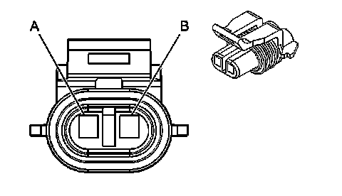
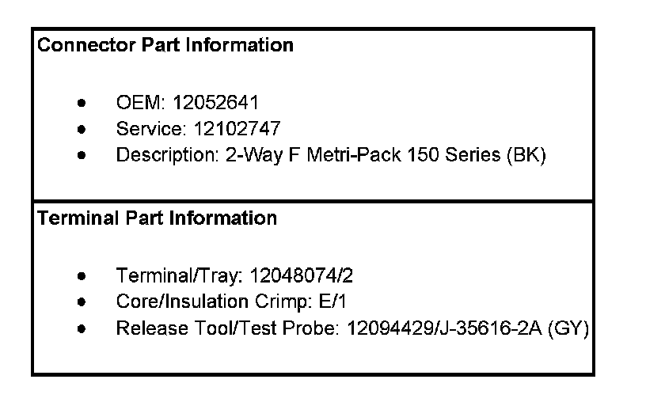
Wheel Speed Sensor (WSS)- LF (JH6 Over 8600 GVW):
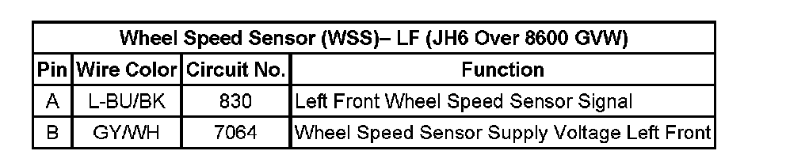
Wheel Speed Sensor (WSS) - LF (JL4 Under 8600 GVW)
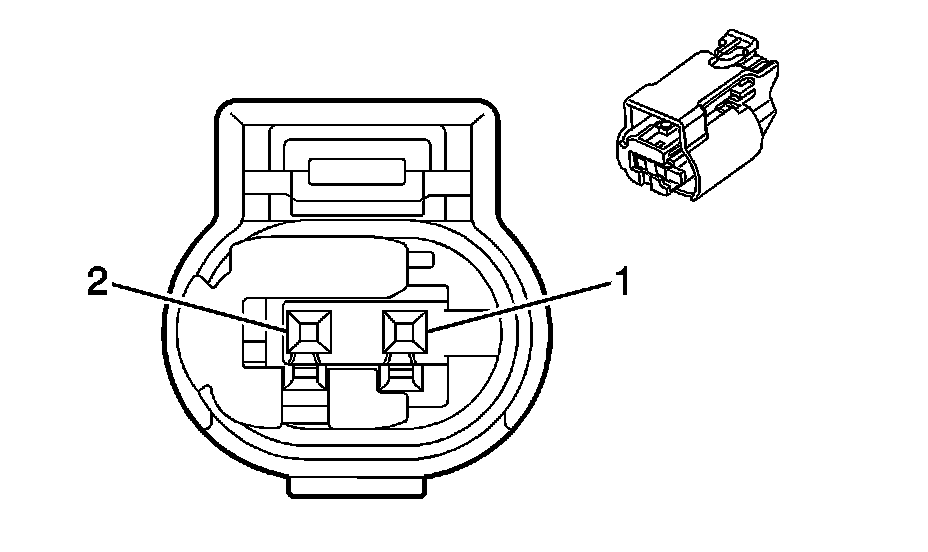
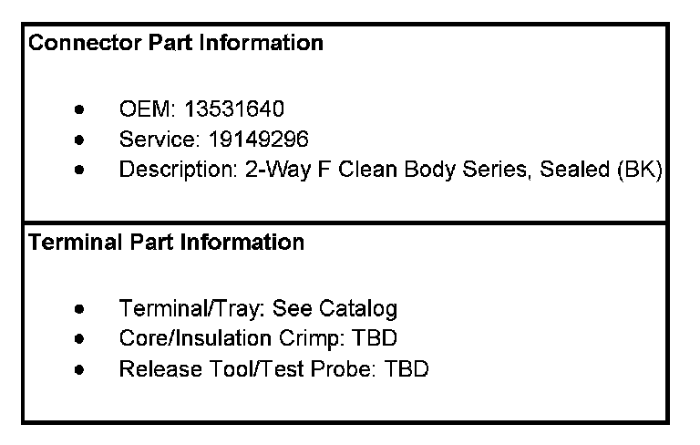
Wheel Speed Sensor (WSS)- LF (JL4 Under 8600 GVW):
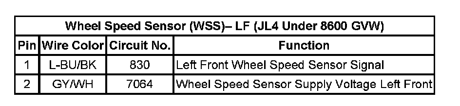
Wheel Speed Sensor (WSS) - LR
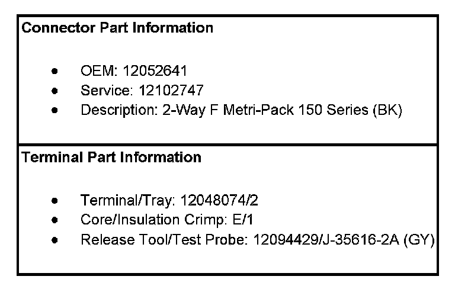
Wheel Speed Sensor (WSS)- LR:
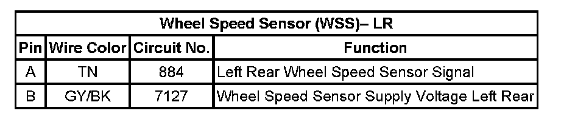
Wheel Speed Sensor (WSS) - RF (JH6 Over 8600 GVW)
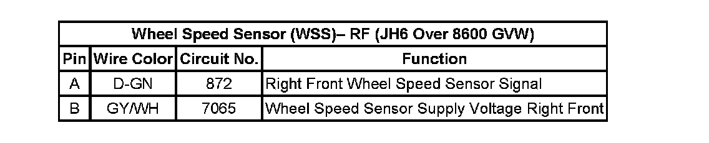
Wheel Speed Sensor (WSS) - RF (JL4 Under 8600 GVW)
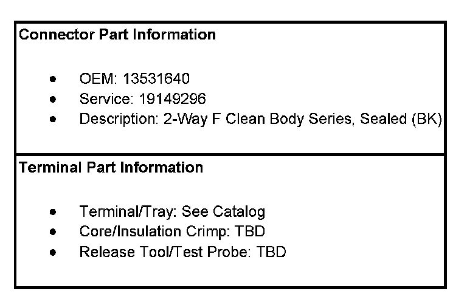
Wheel Speed Sensor (WSS)- RF (JL4 Under 8600 GVW):
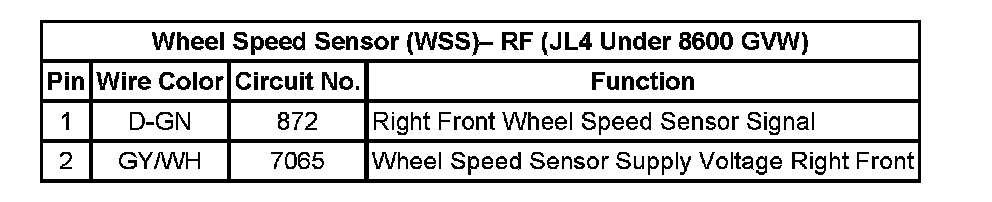
Wheel Speed Sensor (WSS) - RR
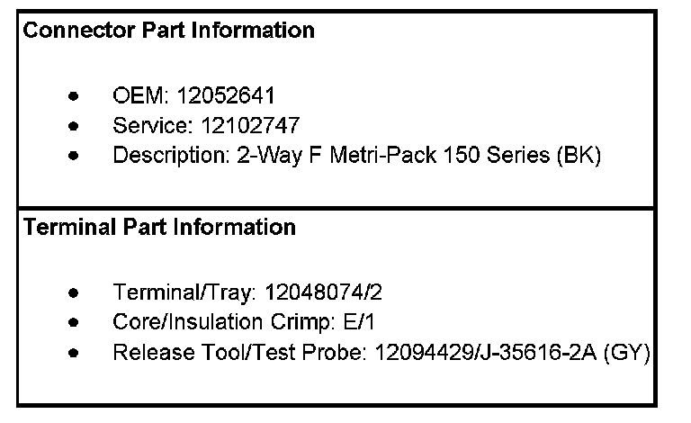
Wheel Speed Sensor (WSS)- RR:
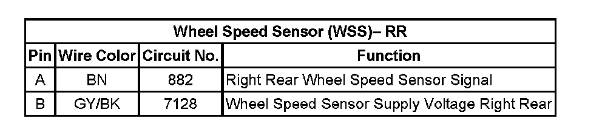